Project index — business impact and technical depth
10 projects · 4 categories
Four years of data science at Universitas Airlangga, two internships, twenty-nine documented projects. SQL and dashboards on one end — machine learning, NLP and retrieval-augmented systems on the other. One person, from the query to the recommendation.
Anyone can ship a chart. The work is finding the decision hiding underneath it.
Analysis stops being reporting the moment it changes what someone does on Monday. That is the line I work to — clean the data, model it honestly, then say plainly what it means and what to do about it.
You talk to the person who wrote the query, trained the model, and built the deck. No handoffs, nothing lost in translation.
BNSP Associate Data Analyst (2025–2028) and Digitalent Associate Data Scientist. Competence on paper, not just on a CV.
Twenty-nine projects with named methods and measured outcomes. Every claim on this page points at something you can look at.
Query to decision, with the reasoning left visible.
Models chosen for the problem, benchmarked against each other.
Text as data — in Indonesian and English.
Retrieval systems that get tested before they get demoed.
In most teams the person who presents the insight is rarely the person who cleaned the data. The context leaks at every handoff, and by the time it reaches the decision-maker nobody in the room can answer “why does the model think that?”
I keep the whole chain in one pair of hands. I pull the data, I decide the method, I build the model, and I stand in front of the stakeholders to defend it — which is how nineteen functional test scenarios got closed at Telkomsel, and how a thesis on imbalanced CT data ended up with Grad-CAM verification instead of a single accuracy number.
It also means the scope is honest. I take work I can finish properly, and I tell you when something is outside that line.
Three exhibits. Every number below comes from work listed further down this page — hover a bar to see which project it belongs to, click it to open the case.
10 projects · 4 categories
Same shape every time
# 1. get the data honest before anything else SELECT customer_id, MAX(txn_date) AS recency, COUNT(*) AS frequency, SUM(premium) AS monetary FROM policy_transactions WHERE txn_date >= '2022-01-01' GROUP BY customer_id HAVING SUM(premium) > 0; # 2. model it, then check it disagrees with you km = KMeans(n_clusters=4, random_state=42).fit(rfm_scaled) silhouette_score(rfm_scaled, km.labels_) # 0.58 # 3. name the segments in the stakeholder's language labels = ['loyal', 'newcomer', 'at-risk', 'high-risk']
Clean first, model second, translate third. The third step is the one that gets skipped, and it is the only one the business actually pays for.
Traceable to a project
Open any row for the full case — method, stack and the visuals that came out of it.
Internships, campus leadership and the degree underneath them, in one line. Click any photograph to enlarge it.
Analyzed public sentiment and conversation trends on highly discussed issues across social platforms, synthesizing societal reactions into structured, data-driven opinion reports delivered to the analyst division.
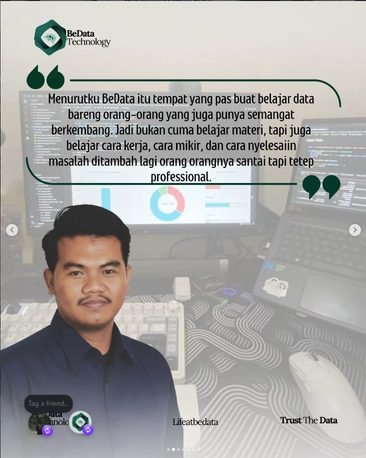
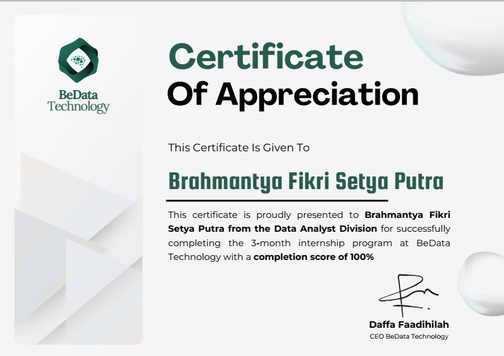
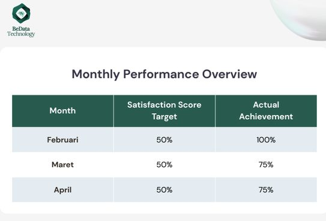
Validated an internal RAG-based chatbot data pipeline across 19+ functional test scenarios, analyzed document query logs to find automation opportunities, and presented the Telkomsel AI Assistant to division stakeholders as the final deliverable.
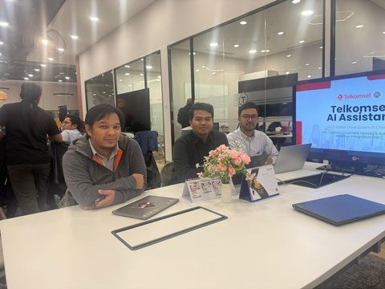
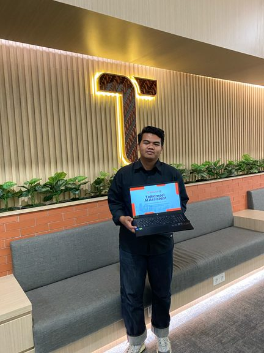
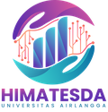
HIMATESDA — Data Science Student AssociationSecond-highest executive of the association: supported strategic planning, coordinated across departments, and oversaw delivery of key work programs.
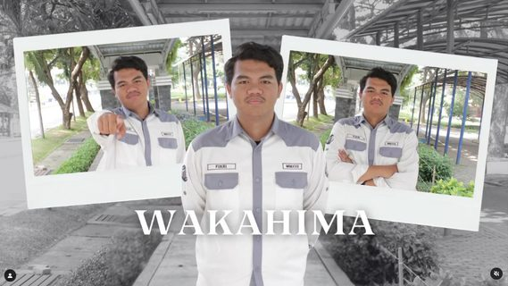
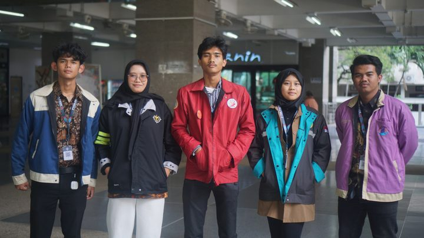
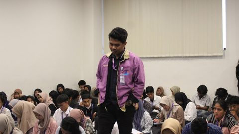
Ran member training and competency development, handled performance evaluation, and maintained the organization’s member database.
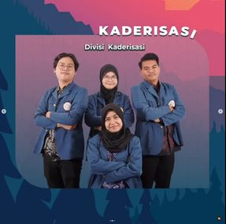
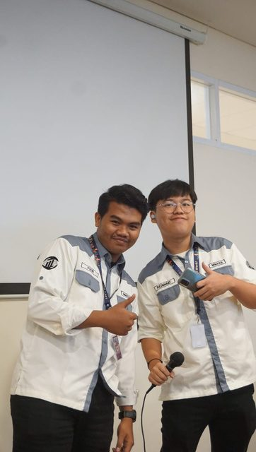
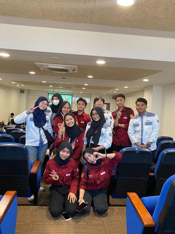
Faculty-level leadership and organizational management programme focused on soft skills, teamwork and student organizational dynamics.

 Universitas Airlangga · GPA 3.56, cum laude
Universitas Airlangga · GPA 3.56, cum laude
Thesis on NSCLC stage classification from CT images using deep learning and transformer architectures, with Grad-CAM interpretability to verify model decisions beyond raw accuracy.
No self-assessment without a receipt — the right-hand column links to the case it came from.
 Python
Python
 R / RStudio
R / RStudio
 SQL / MySQL
SQL / MySQL
 Looker Studio
Looker Studio
 Tableau
Tableau
 Power BI
Power BI
 Excel
Excel
 Sheets
Sheets
 SPSS
SPSS
Let’s talk data.
Open to Data Analyst, Data Scientist and Business Analyst roles — Surabaya, Jakarta or remote. Email is fastest; I reply to everything.